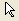
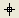
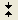
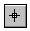
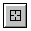
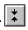

(8.5.0)
(8.5.0)
(8.5.0)
(8.5.0)
(8.5.0)
Use this command for management of the Tools toolbar tools. Most of these options perform their functions on the currently selected tool, so you may need to first select a tool before specifying an option for that tool.
dotoolbox [option] < toolNumber [message1 message2 ...] >
Here, toolNumber indicates:
| # | Tool | # | Tool | # | Tool | # | Tool |
|---|---|---|---|---|---|---|---|
| 0 | Pointer (Object Selection)  | 1 | Zoom-In | 2 | Screen Reader | 3 | Data Reader |
| 4 | Data Selector  | 5 | Draw Data | 6 | Text Tool | 7 | Arrow Tool |
| 8 | Curved Arrow Tool | 9 | Line Tool | 10 | Rectangle Tool | 11 | Circle Tool |
| 12 | Polygon Tool | 13 | Polyline Tool | 14 | Region Tool | 15 | Freehand Draw Tool |
| 16 | Zoom-Out | 17 | Regional Data Selector : Select data on Active or All Plots (Press Tab key to toggle mode) in Layer | 18 | Regional Mask Tool : Mask data on Active or All Plots (Press Tab key to toggle mode) in Layer | 19 | Panning Tool (8.5.0) |
| 20 | Insert Equation (8.5.0) |
21 | Insert Word (8.5.0) |
22 | Insert Excel (8.5.0) |
23 | Insert OLE Object (8.5.0) |
Note on the Screen Reader and Data Reader Tools
The Screen Reader, Data Reader and Data Selector tools are programmable. If you double-click or press ENTER when one of these tools is active, the PointProc macro is executed. You can define this macro to perform any script.
When you select one of these tools, information is read into the following variables:
Note on the Data Selector Tool
When you use the Data Selector  tool to set the beginning and ending data markers, the internal variables mks1 and mks2 are set and can then be used in script. When programmatically accessing the Data Selector, it is convenient to re-program the PointProc macro to automatically execute a script after you double-click or press ENTER to set the markers.
This script reports the row index and the X and Y values for each marker:
dotool 4; def pointproc { py = %C[mks1]; %A = xof(%C); px = %A[mks1]; type -a Left marker is at index $(mks1), X is $(px),Y is $(py); py = %C[mks2]; %A = xof(%C); px = %A[mks2]; type -a Right marker is at index $(mks2), X is $(px),Y is $(py); dotool 0; };
Syntax: dotoolbox no option toolNumber [message1 message2 message3 ...]
Select the tool toolNumber from the Tools toolbar. ToolNumber must be a value from 0 (selects the Pointer tool) to 18 (selects the Regional Mask Tool). Each message defines a line of help text for the tool toolNumber that can be displayed in the status bar. See the -n option. Some tools do not allow multiple messages and some tools override the first message.
Syntax: dotoolbox -a
Equivalent to pressing the ALT key. The function for this switch is not defined.
Syntax: dotoolbox -b toolNumber
Block the Tools toolbar tool toolNumber. This option makes the tool unavailable for selection. See the -u option to unblock.
Syntax: dotoolbox -c
Equivalent to pressing the CTRL key. Allows you to click-and-drag to move data points (the data must be movable - either drawn with the Draw Data tool, or set as movable with the set command). This option has an effect only when the Data Reader tool is active.
Syntax: dotoolbox -d
Make a single mouse click equivalent to a double-click.
Syntax: dotoolbox -dh toolNumber
Open the toolNumber tool from the Tools toolbar but do not open the Data Display tool. toolNumber values are:Screen Reader = 2, Data Reader = 3, and Data Selector = 4.
Syntax: dotoolbox -h message
Append message to the end of the list of Tools toolbar status bar help messages for the selected tool. The list is first-in-last-out.Note:dotool -h and dotool -n are intended to be used sequentially (-h first).
Syntax: dotoolbox -k
When the Data Reader tool is active, disables movement of the cursor with the left and right arrow keys on the keyboard. After selecting the Data Reader tool and executing dotool -k, the mouse cursor does not move with the current data point selection when using the left and right arrows on the keyboard.
Syntax: dotoolbox -l
Restrict use of a Tools toolbar tool to the active layer.
Syntax: dotoolbox -n
Advance to the next defined help message and display the text in the status bar. Note:dotool -h and dotool -n are intended to be used sequentially (-h first).
Syntax: dotoolbox -p [WindowName]
Select a graph or worksheet window to be pasted to the layout page window. If WindowName is specified, that window is used. If no window is specified, the Select Worksheet Object dialog box opens. Once the window is selected, click-and-drag an area within the layout page window for the object.
Syntax: dotoolbox -pw [WindowName]
Select a worksheet window to be pasted to the layout page window. If WindowName is specified, that window is used. If no window is specified, the Select Worksheet Object dialog box opens. Once the window is selected, click-and-drag an area within the layout page window for the object.
Syntax: dotoolbox -pg [WindowName]
Select a graph window to be pasted to the layout page window. If WindowName is specified, that window is used. If no window is specified, the Select Graph Object dialog box opens. Once the window is selected, click-and-drag an area within the layout page window for the object.
Syntax: dotoolbox -q
Quit the Tools toolbar. De-select the current tool and select the Pointer tool. This does not execute the quittoolbox macro if it has been defined.
Syntax: dotoolbox -r
When using the Data Reader tool, this option restricts the cursor to only select within dataset. If index is included, the Data Selector or Data Reader tool moves to position index + 1. This command should be executed after starting the Data Reader tool.
Syntax: dotoolbox -s
Equivalent to pressing the SHIFT key. Multiplies the cursor movement speed by 10.
Syntax: dotoolbox -t show
Show or hide the Tools toolbar.Show can have the following values: 1 = show and 0 = hide.
Syntax: dotoolbox -u toolNumber
Unblock the tool toolnumber.If toolNumber is not specified, unblock all tools.
Syntax: dotoolbox -v
When using the Screen Reader tool, this option restricts the cursor to vertical-only movement at the current X value. (Same as -y option.)
Syntax: dotoolbox -x
When using the Screen Reader tool, this option restricts the cursor to horizontal-only movement at the current Y value.
Syntax: dotoolbox -y
When using the Screen Reader tool, this option restricts the cursor to vertical-only movement at the current X value. (Same as -v option.)
Syntax: dotoolbox -z
Activates the Zoom tool while the current tool is still active.
The following script displays a message in the status bar and uses the Screen Reader tool with restrictions to the current layer.
dotool 2 (Click a location to read X and Y values); dotool -l;
The next script displays a message in the status bar and uses the Data Reader tool with (single) clicks causing double-clicks. After a 5 second delay, another message displays and the tool reverts back to the Pointer tool.
dotool 3 (Select a point by clicking on it) (Time is up); dotool -d; sec -p 5; dotool -n; dotool 0;
This script creates some data and plots it. The Data Selector tool runs and types instructions to the Status bar. After double-clicking two points (or clicking on a point then pressing Enter twice) information on the two points and the slope of a connecting line is typed to the Script Window.
newbook; col(1)=data(1,30); col(2)=uniform(30); col(3)=normal(30); range r1 = [%(page.name$)]%(layer.name$)!(1,2); range r2 = [%(page.name$)]%(layer.name$)!(1,3); win -t plot linesymb; plotxy iy:=r1 ogl:=1 color:=2; plotxy iy:=r2 ogl:=1 color:=4; dotool 3 (ignored) (Double-click or Press Enter to pick first point) (Double-click or Press Enter to pick second point); count = 1; dotool -n; def pointproc { PX$(count) = X; PY$(count) = Y; count++; dotool -n; if(count == 3) { type Slope of line connecting $(PX1),$(PY1) to $(PX2),$(PY2); type is $((PY2-PY1)/(PX2-PX1)); dotool 0; } }
There are two macros BeforePointProc and AfterPointProc to control the plot styles when using Draw Data Tool.
Minimum Origin Version Required: 2015 SR0
The LabTalk script example is shown below:
def AfterPointProc { if (getpts.count >= 3) { set %B -l 9; // set line connection method to spline. } } dotool 5;
We can change AfterPointProc into BeforePointProc in LabTalk script above, and the same spline result can be obtained.